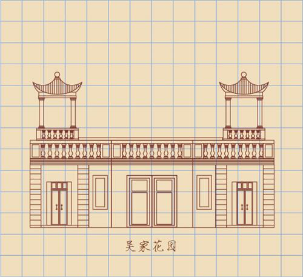

所在街区：江岸区南京路113号 建筑风格：古典主义 建造年代：1921年 现存情况：武汉亚为企业托管有限公司

南京路113号楼，整体结构和建筑细节的原生态留存的较为完整的，从所有的窗户都是原有木窗，可窥一斑。，钢筋混凝土结构，典型的欧式建筑。立面为变化的三段式结构，并保留了古希腊柱式和顶部山花的特征。但整个设计趋向轻盈，与之相应，墙面及檐口女儿墙富有变化。入口使用了4根立柱，分两组列于大门两侧，多立克式，但比例上更细长。三楼窗户设计有精巧的小阳台。整栋大楼没有复杂的装饰，线条简洁明快，有古典主义向现代风格过度的特点。